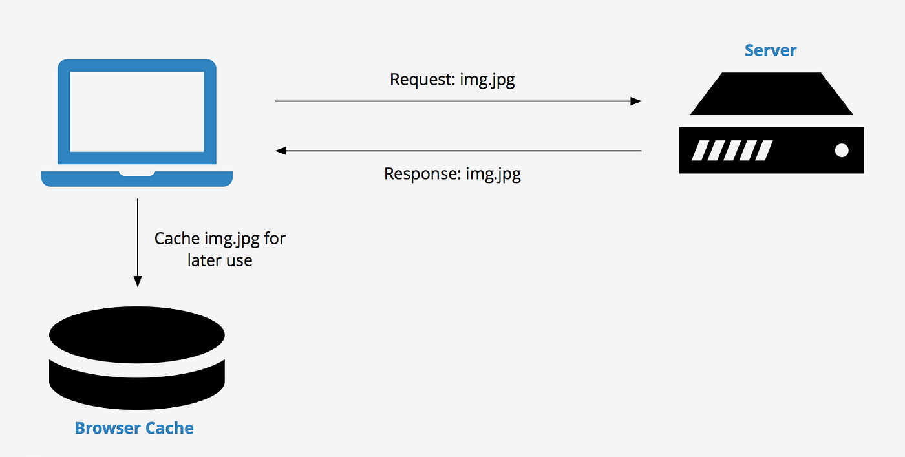

Proactive Precaching: Handling Connectivity Loss
Introduction
In modern web development, it's common for web applications to consume large amounts of data from the server. As a result, network connectivity can become a critical bottleneck, and network requests can result in slow loading times and poor user experiences.
One way to mitigate this issue is through client-side caching. Caching involves storing data on the client-side, allowing subsequent requests to retrieve the data from the cache instead of making additional server requests. This technique can significantly improve the performance and responsiveness of web applications, particularly when dealing with data that changes infrequently.
One use case for client-side caching is when we need to maintain objects in memory to avoid repeatedly fetching them from the server. By storing frequently used data on the client-side, we can reduce the number of requests sent to the server and speed up the application's response time. Even in scenarios where connectivity is temporarily lost, data stored in the cache can be retrieved, allowing the application to continue functioning seamlessly.

The problem
Suppose an education company offers online assessments to students and needs to maintain uninterrupted user experience even when the connection is unstable. During the assessments, multimedia assets like audio, video, and images are provided with the questions. However, the students cannot access the assets if they lose their internet connection temporarily. This results in poor performance and a bad experience overall.
To address this problem, the company's technical team developed a client-side caching solution. This solution caches the multimedia assets on the client-side so that even if the students lose connectivity, they can still access the assets. The solution is designed to be lightweight, simple to implement, and provide a seamless user experience.
Solution
A way to approach the problem is by caching multimedia assets using JavaScript object URLs. The idea is to download the assets from the server, create a blob object from the downloaded data, and then create a URL object from the blob. The URL object can then be used to reference the cached data in the future.
Here's some sample code that demonstrates how to use JavaScript object URLs to cache multimedia assets:
// Define a function to download a file from the server and cache it as a blob
async function cacheFile(url) {
const response = await fetch(url);
const data = await response.blob();
const blob = new Blob([data], { type: response.headers.get('content-type') });
return URL.createObjectURL(blob);
}
// Example usage: cache an image file and set it as the source of an <img> element
const imageUrl = 'https://example.com/image.jpg';
const cachedImageUrl = await cacheFile(imageUrl);
const img = document.createElement('img');
img.src = cachedImageUrl;
document.body.appendChild(img);
In this example, the cacheFile() function downloads the file at the given URL and creates a blob object from the downloaded data. It then creates a URL object from the blob and returns the URL. The img element is then created and its src attribute is set to the cached URL.
But also we want to make our approach seamless without having a huge impact in the development process.
Suppose we have an HTML page with an image that we want to cache on the client-side. We can add a custom attribute to the image tag, such as data-cacheable, to indicate that this image should be cached. Here's an example:
<img src="https://example.com/image.jpg" alt="An image" data-cacheable="true">
Next, we can use JavaScript to intercept the image loading process and cache the image using an object URL. We can achieve this by adding an event listener to the load event of the image tag, creating an object URL using the URL.createObjectURL() method, and setting the src attribute of the image tag to the object URL. Here's an example:
// Get all images with the 'data-cacheable' attribute
const cacheableImages = document.querySelectorAll('img[data-cacheable="true"]');
// Loop through each image and cache it
cacheableImages.forEach((image) => {
const imageUrl = image.src;
// Create a new Image object and set its source to the original image URL
const img = new Image();
img.src = imageUrl;
// When the image is loaded, create an object URL and set it as the new source
img.addEventListener('load', () => {
// Create a new object URL from the image data
const objectUrl = URL.createObjectURL(img);
// Set the image source to the object URL
image.src = objectUrl;
});
});
By using object URLs to cache the image, we can ensure that the image is always available, even if the user's connection is lost temporarily. When the connection is restored, the browser can automatically download the updated image from the server and replace the cached version.
Here's an updated HTML tag with the src attribute replaced with the object URL:
<img src="blob:https://example.com/82a308a1-cb1a-48f9-b48c-8f29181ce82b" alt="An image" data-cacheable="true">
This approach can be extended beyond multimedia assets to cache data responses from the server as well. By identifying frequently used data and caching it on the client-side, we can significantly improve the performance and responsiveness of web applications, particularly when dealing with data that changes infrequently. Additionally, by adding custom attributes to the respective tags and using similar code to cache them, we can also cache other types of resources such as videos or audio files.
function fetchAndCache(url) {
// Check if the response is already in the cache
if (url in cache) {
return fetch(cache[url]);
}
// Otherwise, fetch the response from the server
return fetch(url)
.then(function(response) {
// Store the response data in an object URL
return response.blob();
})
.then(function(blob) {
var objectUrl = URL.createObjectURL(blob);
cache[url] = objectUrl;
return fetch(objectUrl);
});
}
// Example usage:
var apiUrl = 'https://example.com/api/data';
fetchAndCache(apiUrl)
.then(function(data) {
// Use the cached data
});
Conclusion
The concept of caching information in the memory of a web browser is an important technique for improving website performance and user experience. While we have only scratched the surface of this topic, exploring one caching approach, there are many other concepts and strategies available. It's important for web developers to understand caching and its impact on website performance, and to implement caching strategies that are appropriate for their specific use case. For those interested in exploring the caching approach discussed in this article, an implementation is available at https://github.com/lexmihaylov/cachee.